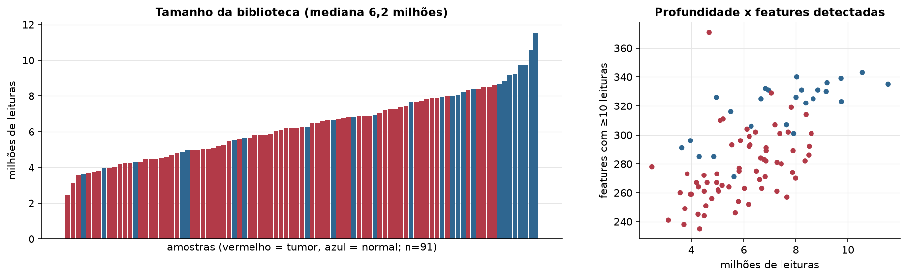
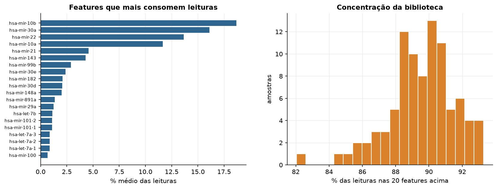
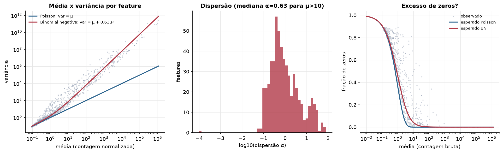
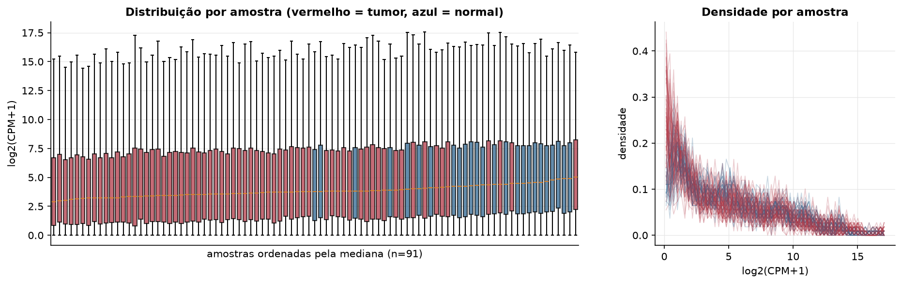
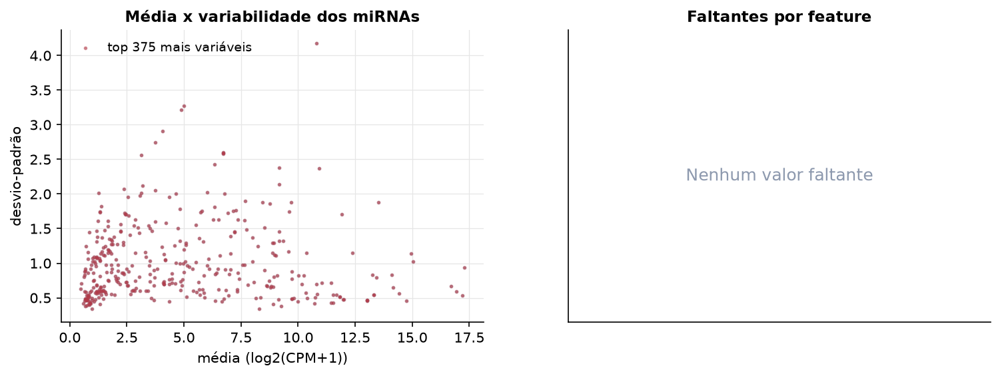
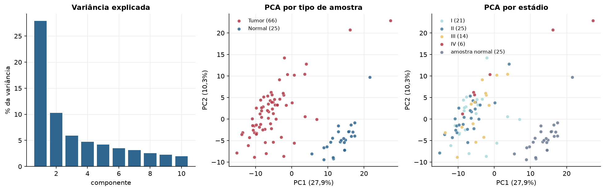
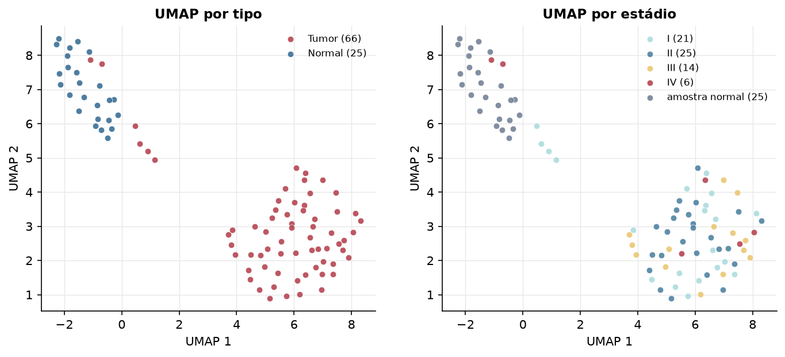
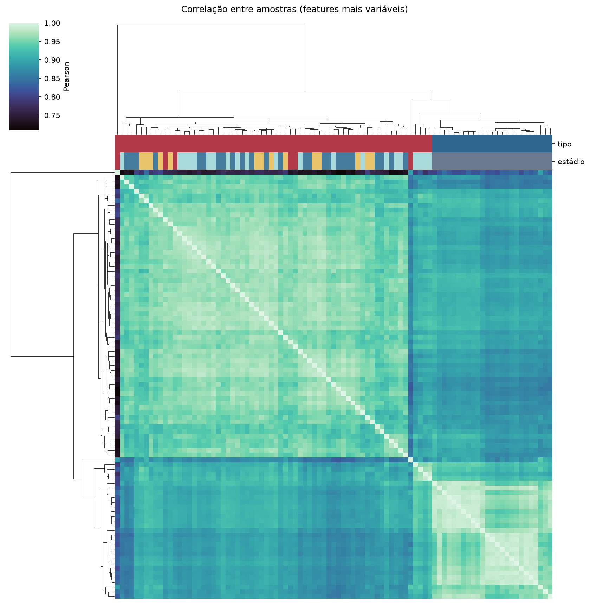
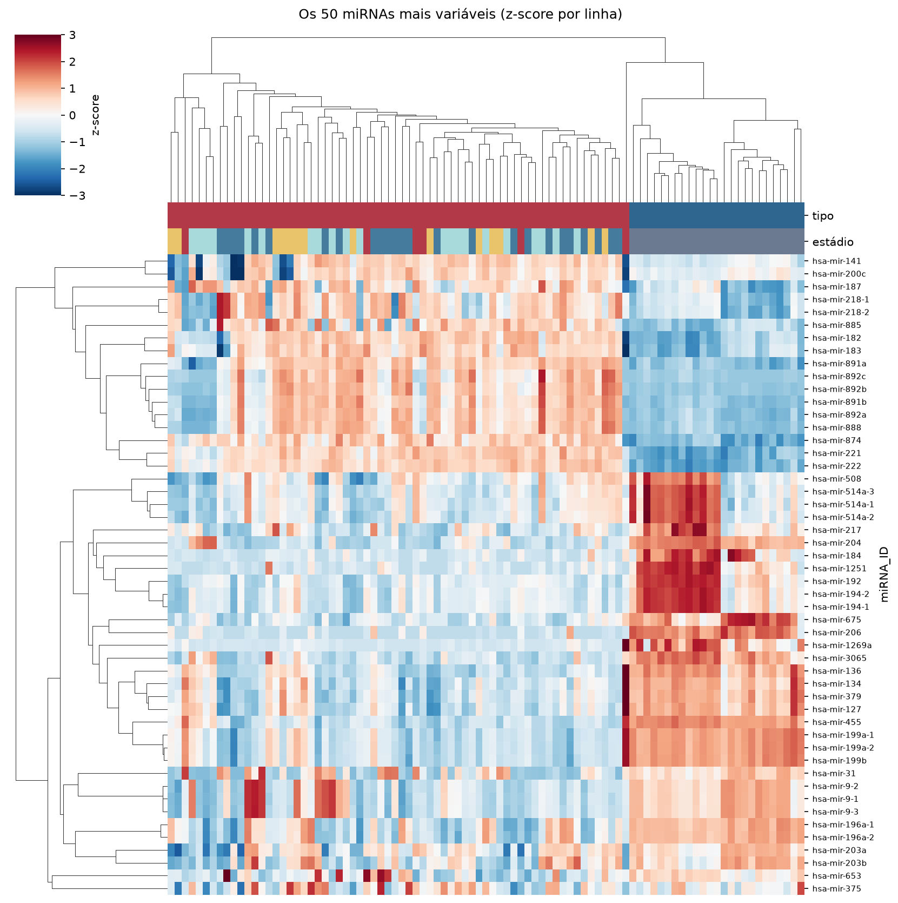
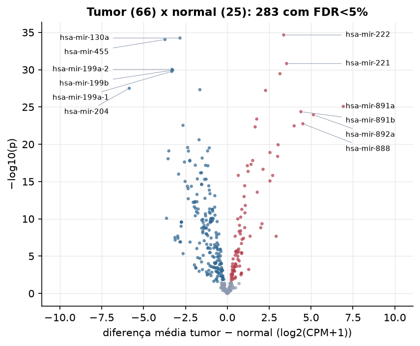

KICH · miRNA-seq: contagens brutas (GDC)
BCGSC miRNA Profiling (miRBase v21) · gerado em 21/10/2026 22:18
6,2 Mtamanho mediano
0,63dispersão mediana α
375miRNAs
66amostras tumorais
25amostras normais
0,0%valores faltantes
Fonte: API do GDC (BCGSC miRNA Profiling)
Principais resultados
- Bibliotecas de 2,5 a 11,5 milhões de leituras (mediana 6,2). 932 de 1.881 features têm leitura em pelo menos 10% das amostras.
- A variância cresce bem acima da média: a dispersão mediana da binomial negativa é α=0.63 (para features com média > 10). Isso descarta um modelo Poisson e indica binomial negativa (ou Poisson-lognormal) na verossimilhança.
- A fração de zeros é compatível com a binomial negativa (diferença mediana -0,4%); inflação de zeros não parece necessária.
- Em média 89,6% das leituras de cada amostra vão para as 20 features mais abundantes.
- 375 miRNAs medidos em 91 amostras (66 tumorais e 25 normais); 0,0% dos valores estão faltando.
- Os dois primeiros componentes principais explicam 27,9% e 10,3% da variância das features mais variáveis.
- Correlação mediana entre amostras: 0,93.
- Amostras com correlação muito abaixo das demais (possíveis outliers técnicos): TCGA-KO-8404-01.
- Tumor x normal: 283 miRNAs diferentes com FDR < 5% (86 maiores no tumor, 197 maiores no normal; 25 pacientes têm o par tumor-normal).
- Mais aumentados no tumor: hsa-mir-222, hsa-mir-221, hsa-mir-874, hsa-mir-582, hsa-mir-891a, hsa-mir-891b, hsa-mir-892a, hsa-mir-4501.
- Mais reduzidos no tumor: hsa-mir-130a, hsa-mir-455, hsa-mir-199a-2, hsa-mir-199b, hsa-mir-199a-1, hsa-mir-204, hsa-mir-1287, hsa-mir-214.
- Associações clínicas com p < 0,05 nos componentes principais: PC1 com estádio (p=0.018); PC1 com sobrevida (p=0.0025).
Biblioteca


Sobredispersão e zeros

Exploração em log2(CPM+1)
Features com CPM ≥ 1 em pelo menos 20% das amostras (375 features).
Distribuição dos valores


Estrutura das amostras




Tumor x normal

Features mais diferentes entre tumor e normal
| miRNA_ID | diferenca_tumor_menos_normal | t | p | fdr |
|---|---|---|---|---|
| hsa-mir-222 | 3.367 | 27.991 | 2.2e-35 | 8.23e-33 |
| hsa-mir-130a | -2.826 | -20.364 | 5.69e-35 | 1.07e-32 |
| hsa-mir-455 | -3.722 | -20.321 | 9.04e-35 | 1.13e-32 |
| hsa-mir-221 | 3.54 | 23.55 | 1.5e-31 | 1.4e-29 |
| hsa-mir-199a-2 | -3.303 | -17.727 | 9.2e-31 | 6.9e-29 |
| hsa-mir-199b | -3.264 | -17.695 | 1.16e-30 | 7.24e-29 |
| hsa-mir-199a-1 | -3.324 | -17.566 | 1.71e-30 | 9.17e-29 |
| hsa-mir-874 | 3.145 | 19.838 | 3.49e-30 | 1.64e-28 |
| hsa-mir-204 | -5.856 | -16.776 | 3.13e-28 | 1.3e-26 |
| hsa-mir-1287 | -1.637 | -16.224 | 4.8e-28 | 1.8e-26 |
| hsa-mir-582 | 2.282 | 16.104 | 6.03e-28 | 2.06e-26 |
| hsa-mir-891a | 6.926 | 14.855 | 8.44e-26 | 2.64e-24 |
| hsa-mir-891b | 4.394 | 15.109 | 4.28e-25 | 1.23e-23 |
| hsa-mir-892a | 5.142 | 14.36 | 1.11e-24 | 2.96e-23 |
| hsa-mir-4501 | 1.757 | 14.523 | 4.13e-24 | 1.03e-22 |
| hsa-mir-888 | 4.513 | 13.929 | 1.77e-23 | 4.15e-22 |
| hsa-mir-214 | -2.646 | -14.215 | 2.9e-23 | 6.39e-22 |
| hsa-mir-892b | 3.989 | 14.851 | 3.38e-23 | 7.05e-22 |
| hsa-mir-618 | 1.661 | 13.401 | 4.72e-23 | 9.31e-22 |
| hsa-mir-887 | -1.688 | -13.872 | 2.47e-21 | 4.64e-20 |
| hsa-mir-892c | 3.032 | 13.148 | 1.17e-20 | 2.09e-19 |
| hsa-mir-335 | -2.366 | -11.998 | 2.71e-20 | 4.62e-19 |
| hsa-mir-23b | -1.077 | -12.164 | 3.08e-20 | 5.02e-19 |
| hsa-mir-301a | -1.178 | -11.852 | 7.8e-20 | 1.17e-18 |
| hsa-mir-206 | -3.493 | -18.139 | 7.81e-20 | 1.17e-18 |
| hsa-mir-190a | -2.321 | -12.724 | 8.2e-20 | 1.18e-18 |
| hsa-mir-96 | 2.546 | 12.397 | 1.27e-19 | 1.76e-18 |
| hsa-mir-182 | 3.006 | 12.131 | 4.25e-19 | 5.69e-18 |
| hsa-mir-1180 | -1.502 | -11.321 | 7.04e-19 | 9.11e-18 |
| hsa-mir-3065 | -3.536 | -13.39 | 8.69e-19 | 1.09e-17 |
Associação com variáveis clínicas
p-valores da associação dos três primeiros componentes principais (só tumores) com estádio (Kruskal-Wallis), sexo (Mann-Whitney), idade (Spearman) e sobrevida global (Cox univariado).
| estádio (Kruskal) | sexo (Mann-Whitney) | idade (Spearman) | sobrevida OS (Cox) | |
|---|---|---|---|---|
| PC1 (21,1%) | 0.018 | 0.397 | 0.206 | 0.003 |
| PC2 (9,4%) | 0.603 | 0.825 | 0.328 | 0.56 |
| PC3 (6,4%) | 0.358 | 0.896 | 0.53 | 0.966 |